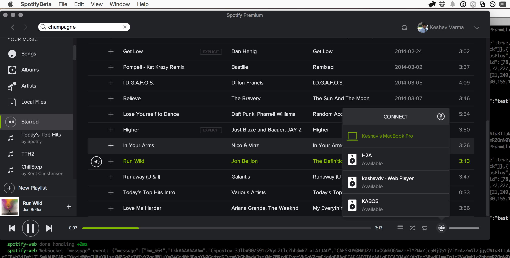

Here are a few personal projects I've worked on.
unifi-cam-proxy
A project that enables using non-Ubiquiti cameras within the UniFi Protect ecosystem.
Spotifly
An effort in reverse-engineering when Spotify Connect was first released, Spotifly allowed you to turn any device into a Spotify Connect enabled endpoint. Simply start the spotifly server and the device will show up on your phone as a Connect device.
